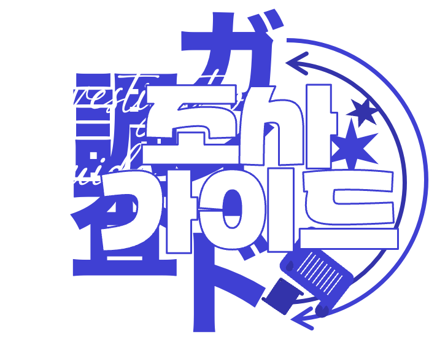
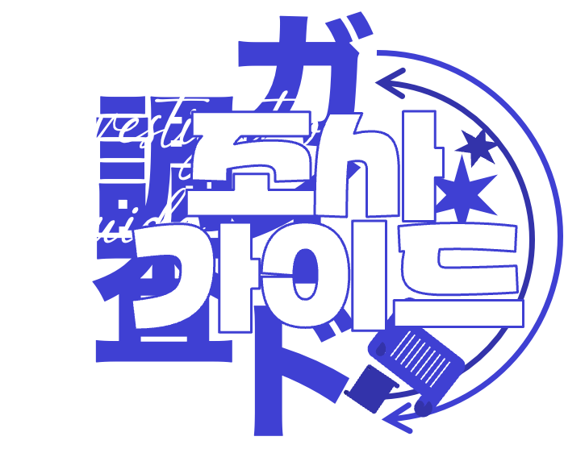
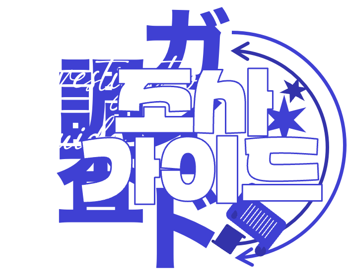
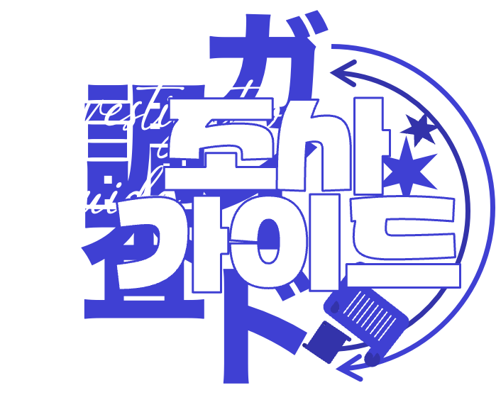

User ID : UNKNOWN
Coin : ???
 

ID를 입력하세요.
조사 가이드
웹에서는 클릭, 모바일에서는 터치로 진행합니다. 자유롭게 종료하고 재실행하셔도 좋지만, 창을 닫거나 뒤로가기/새로고침할 시 진행 경과가 초기화되니 주의해 주세요.
본 조사는 별도의 서버를 사용하지 않기 때문에 세션을 종료하면 결과가 저장되지 않습니다.
메인 화면에서 '조사 종료→조사 마치기' 를 클릭하면 획득 코인을 알려 주는 화면이 표시됩니다. 최종 화면을 표시한 후에는 이전으로 돌아갈 수 없습니다.
최종 화면을 스크린 캡처하여 총괄계 DM으로 보내 주시면 조사 완료 처리됩니다.
모든 조사를 마치고 최종 리포트를 작성합니다. 진행할 시 이전 단계로 되돌아갈 수 없습니다.
조사를 마칠까요?
[건물 입구]
흰 관을 연상시키는 건물. 그 입구에 다다른다.
돌로 된 정문 표면에는 알 수 없는 문자가 빼곡히 음각으로 새겨져 있다.
건물 바깥은 이미 충분히 돌아보았으니 오늘은 새로 공개된 장소 위주로 탐색해 보자.
[건물 1층]
대리석 바닥이 반짝거리는 건물 1층.
정면에 방문객을 맞이하는 로비가 보이고, 로비 뒤편에는 뒤편에는 유리로 된 엘리베이터가 배치되어 있어 시선이 저절로 천장을 향한다.
더 안쪽에 있는 복도는 레스토랑으로 이어지는 듯하다.
[엘리베이터]
원하는 층으로 이동할 수 있다.
하지만 4층 이상부터는 정비 중인지, 버튼을 눌러도 불이 들어오지 않는다.
[로비]
건물에 들어오면 가장 먼저 보게 되는 곳.
우아한 석조 카운터를 중심으로 내빈을 위한 라운지가 마련되어 있다.
[로비]
[카운터]
보통이라면 직원이 서 있어야 할 카운터 너머에는 아무도 없다. 가까이 다가가자 공증인의 목소리가 울린다.
"좋은 하루 보내고 계신가요?"
"이번에도 작은 퀴즈를 준비했습니다. 유언 집행을 위한 기력 충전에 도움이 되었으면 좋겠군요."
[로비]/[카운터]
[공증인]
스피커를 통해 흘러나오는 목소리는 정중하지만, 마냥 신뢰할 수는 없다...
"어떤 일을 도와드릴까요?"
[로비]/[카운터]
[공증인]
"로렘 님께서 작성하신 유언을 한 치의 오차 없이 낭독해 드렸습니다.
믿기 어려워하시는 유언집행자 분들이 많으신 듯해 유감입니다만...
그렇다고 유언을 집행하지 않을 수도 없는 노릇이지요."
[로비]/[카운터]
[공증인]
"기록체는 고인의 기억이나 성격을 기반으로 새로운 아웃풋을 도출하기도 합니다.
실로 놀라운 기술이지요. 여러분께 선보일 수 있어 영광입니다."
[로비]/[카운터]
[공증인]
"그럼 문제입니다. 미래기관 대출 순위 1위 도서의 제목을 알고 계신가요?"
정확한 제목을 괄호 없이 입력하자.
[로비]/[카운터]
[공증인]
"정답입니다. 한 번 빌려 보시는 것은 어떤가요?"
짝짝짝, 박수 소리가 울리나 싶더니 어느새 카운터 위에 동전 두 개가 놓여 있다. 퀴즈를 맞힌 보상인 것 같다.
2코인을 획득했다.
[레스토랑]
이곳에 모인 초세계급들의 식사를 책임지는 레스토랑. 식사를 하며 바깥 풍경을 바라볼 수 있도록 유리창이 나 있다.
전에 보았던 것과 크게 달라진 점은 없지만, "음료 디스펜서는 3층의 영화관으로 이전했습니다" 라는 안내문이 붙어 있다.
[레스토랑]/[음료 디스펜서]
커피나 차 등의 음료를 자유롭게 이용 가능한 디스펜서.
기본적인 음료는 물론, 여러 가지 맛의 원두와 티백, 시럽도 비치되어 있어 얼마든지 원하는 음료를 제조 가능할 것 같다.
한쪽에는 '랜덤 디스펜서 : 1일 3회 이용 가능' 이라고 적힌 익숙한 상자가 있다.
그 옆에는 '랜덤 음료 공모전' 이라고 적힌 투표함이 놓여 있다.
[레스토랑]/[음료 디스펜서]
원하는 음료를 가져가거나 랜덤 디스펜서를 이용해 보자. 랜덤 디스펜서는 1일 3회 사용 제한이 있다.
[레스토랑]/[음료 디스펜서]
"다음 주의 랜덤 음료 공모전 테마는... ＜좋아하는 사람의 마음을 사로잡기 위한 음료＞!
유언집행자 여러분의 많은 참여 바랍니다!"
...라고 쓰여 있다. 한 사람당 2개까지 응모 가능한 모양이다.
[2층]
왼쪽 복도는 내빈용 객실로, 오른쪽 복도는 회의실로 이어진다.
2층은 이미 둘러보았으니 다른 층을 확인하자.
[3층]
3층으로 올라오면, 한눈에 봐도 굉장히 다채로운 시설이 있음을 확인할 수 있다.
여러 개의 방문에 반짝거리는 문패가 붙어 있는데, 그야말로 '문화생활'에 걸맞는 시설들이다.
창문 너머로는 섬의 모습이 내려다보인다.
저 멀리 메모리얼 파크에 묘비 세 개가 늘어서 있다...
[음악실]
다양한 악기와 음반을 모아 둔 음악실. 전과 달라진 점은 없는 것 같다. 쓰러져 있었던 딥 블루의 CD가 다시 말끔히 세워져 있다.
[영화관]
소규모지만, 제법 영화관 분위기가 나는 장소. 전과 크게 달라진 점은 없지만,
"음료 디스펜서는 4층의 카페로 이전했습니다" 라는 안내문이 붙어 있다.
[미술실]
예술적 소양을 함양할 수 있는 공간. 이곳저곳 이젤과 화구가 놓여 있다.
그동안 초세계급들이 그린 그림들이 초세계급 화가의 그림 옆에 나란히 전시되어 있다.
[공연장]
원형 극장의 형태를 빌려온 공연장.
지금도 공연장 사용은 문제 없이 가능하지만, 보고 있으면 사건 현장이 떠오른다...
[도서관]
장서의 종류별로 정리된 책장이 숲처럼 펼쳐진다.
지식의 보고라고 불리기에 손색없을 정도의 대형 도서관.책장에서 책을 고를 수 있을 것 같다.
각 서가의 추천도서를 새로 구비했다는 안내문이 붙어 있다.
[도서관]/[책장]
다양한 언어의 책이 꽂혀 있는 책장.
쉽게 읽을 수 있는 책들도 있고, 전공자가 아니면 이해할 수 없는 수준의 전문서적도 있다.
평생 책만 읽어도 다 읽어치울 수 없을 것 같은 양이다.
서가별로 추천도서도 모아 둔 모양인데, 한번 책을 골라 볼까?
[도서관]/[책장]
종교 서가의 추천도서는...
한국의 민간 신앙인 무속신앙에 대해 정리해 둔 책이다.
귀신을 쫓는 방법 중에는 구타를 가하는 '구타법' 이라는 것도 있다고 한다.
[도서관]/[책장]
문학 서가의 추천도서는...
'기억이란 무엇인가?' 라는 제목의 책.
한 번 잊어버린 기억을 떠올리는 것에 대한 다양한 관점을 소개하고 있다.
[도서관]/[책장]
문학 서가의 추천도서는...
'괴물이 잠든 눈' 이라는 소설이다.
작가의 이름은 리반 에케로스.
[도서관]/[책장]
철학 서가의 추천도서는...
'기억이란 무엇인가?' 라는 제목의 책.
한 번 잊어버린 기억을 떠올리는 것에 대한 다양한 관점을 소개하고 있다.
[도서관]/[책장]
자연과학 서가의 추천도서는...
밤하늘의 다양한 별들을 찾는 방법을 알기 쉽게 설명한 책이다.
작은곰자리에 속한 북극성을 설명한 페이지에 책갈피가 꽂혀 있다.
[도서관]/[책장]
사회과학 서가의 추천도서는...
대도시에서 발생하는 소매치기 문제에 대해 다룬 책.
소매치기가 가장 많은 도시로 꼽힌 곳은 바르셀로나. 프랑스 파리는 5위에 올라 있다.
[자유연구실]
학자와 연구자들을 위한 자유연구실.
전과 크게 달라진 점은 없다.